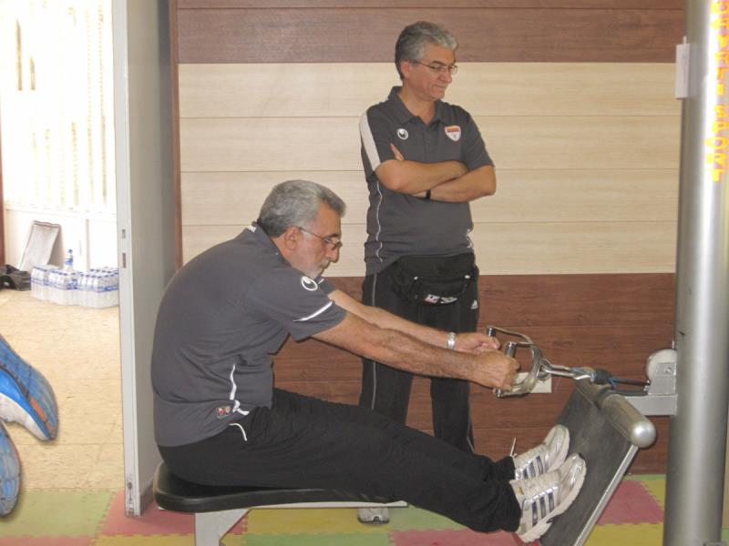
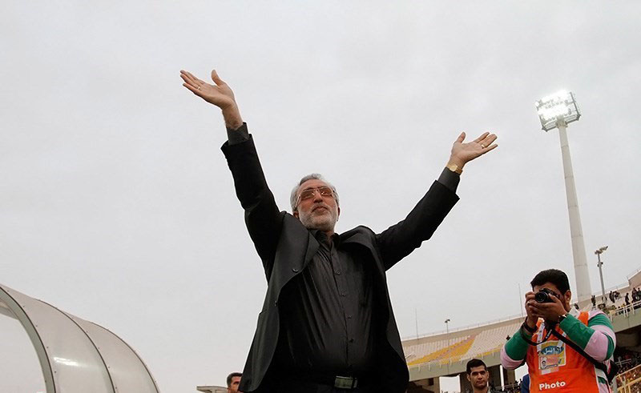

فرکی: هدایت تیم ملی به من پیشنهاد شد اما چون کیروش سرمربی بود، نپذیرفتم

سرویس ورزشی «فردا»- سرمربی سپاهان ادعا میکند فعلا در مورد تمدید قرارداد با سپاهان فکر نمیکند، چون تمرکزش روی بازیهای باقیمانده تیمش است. هرچند به نظر میرسد با نتایجی که این تیم در چند هفته اخیر گرفته، به احتمال فراوان این پیشنهاد را به زودی دریافت خواهد کرد. حسین فرکی در گفتگوی تفصیلی با «نسیم» تایید میکندکه بعد از جامجهانی پیشنهاد هدایت تیم ملی را دریافت کرده اما چون در آن زمان هنوز کیروش سرمربی تیم ملی بوده این پیشنهاد را نپذیرفته است.
- بیشتر از نیم فصل از حضور شما در سپاهان میگذرد. از دوران حضورتان در این تیم راضی هستید؟
خب به هرحال دوران خوبی است. قبل از اینکه به سپاهان بیایم، صحبتهای زیادی در مورد بزرگی این تیم شنیده بودم اما خودم این موضوع را از نزدیک لمس نکرده بودم. از وقتی به اینجا آمدم، کاملا توانستم با این موضوع آشنا شوم و حالا هم کاملا خوشحال هستم که درچنین تیم بزرگی مربیگری میکنم. در این تیم امکانات برای پیشرفت فوتبال فراهم است. این چیزی است که بیش از هرچیز دیگری خوشحالم میکند.
- هر سه تیمی که هدایت آنها را در لیگ برتر برعهده داشتهاند، از نظر ساختار حرفهای شرایط خوبی را داشتهاند. این موضوع اتفاقی است یا با انتخاب خودتان این تیمها سر راهتان قرار گرفتهاند؟
من باید در مورد هر تیم توضیحات جداگانهای بدهم. پیشنهاد نفت تهران کاملا اتفاقی به من داده شد که خدا را شکر دوران خوبی دراین تیم داشتم. فولاد را کاملا با خواست خودم انتخاب کردم، چون در آن سال پیشنهادهای زیادی داشتم اما تصمیم گرفتم با این تیم قرارداد امضا کنم. انتخاب سپاهان هم دست تقدیر بود. این ماجرای تمام انتخابهای چند سال اخیر من است.
- از عملکرد خودتان در سپاهان راضی هستید و فکر میکنید کارنامهتان در این تیم قابل دفاع است؟
شاید بهتر باشد دیگران در اینباره نظر بدهند اما در کل فکر میکنم عملکرد بدی نداشتهام. البته هنوز زمان زیادی از حضور من در این تیم نگذشته و به همین دلیل این تیم هنوز با ایدهآلهای من فاصله دارد اما در کل فکر میکنم روزهای خوبی با این تیم داشتهام و با گذشت زمان میتوانم سپاهان را به اهداف تاکتیکی خودم نزدیکتر کنم.

